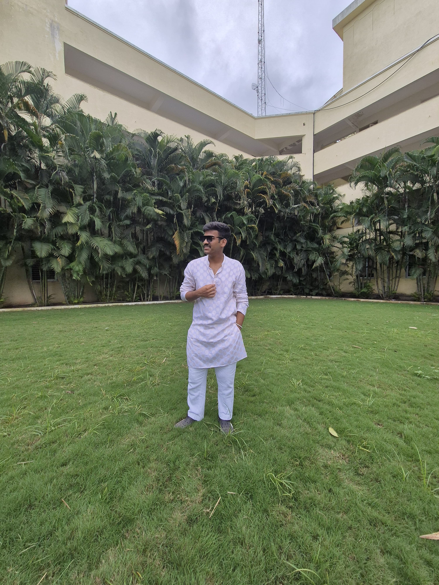

Hello! My name is Sandesh Lendve, I'm a passionate tech enthusiast and a student at Newton School of Technology with a strong interest in coding and software development. My journey in technology revolves around exploring innovative solutions, writing clean, efficient code, and continuously learning new skills. I enjoy tackling complex problems and am driven by a desire to create impactful software that makes a difference. Let's build something great together!
I completed my 10th grade at Kendriya Vidyalaya No. 2, OFDR Pune, where I achieved an impressive 94%.
I continued my studies at the same institution in the Science stream for my 12th grade, graduating with a percentage of 92.8%.
Additionally, I excelled in competitive examinations, securing a JEE percentile of 91 and an MHT-CET percentile of 94.5, reflecting my strong foundation in academic pursuits.
Currently completing my Btech CSE(AI & ML) from Newton School of Technology
As a passionate tech enthusiast with a strong foundation in programming languages including C, C++, Python, and Java, I thrive on solving complex challenges through competitive programming. My experience spans across various domains, allowing me to develop robust applications and contribute to diverse projects. In addition to my programming skills, I possess a solid understanding of web technologies, including HTML, which enhances my ability to create dynamic and user-friendly interfaces. I am committed to continuous learning and strive to leverage my skills to innovate and deliver high-quality solutions in the tech industry.